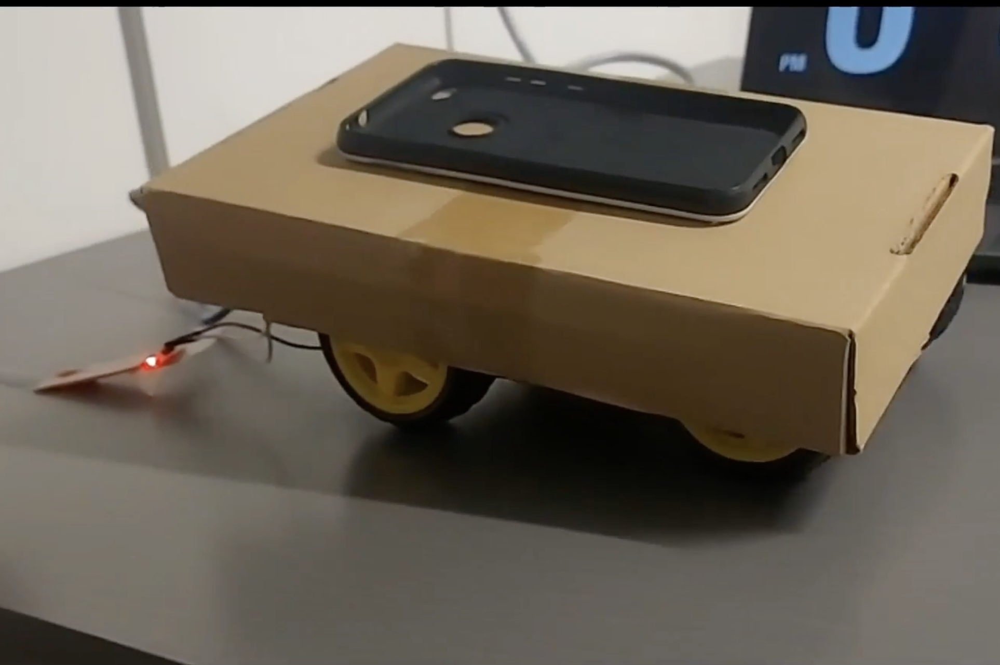
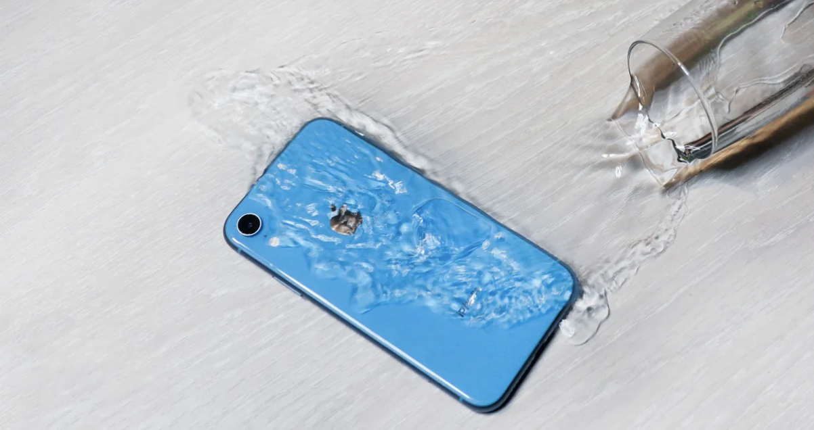
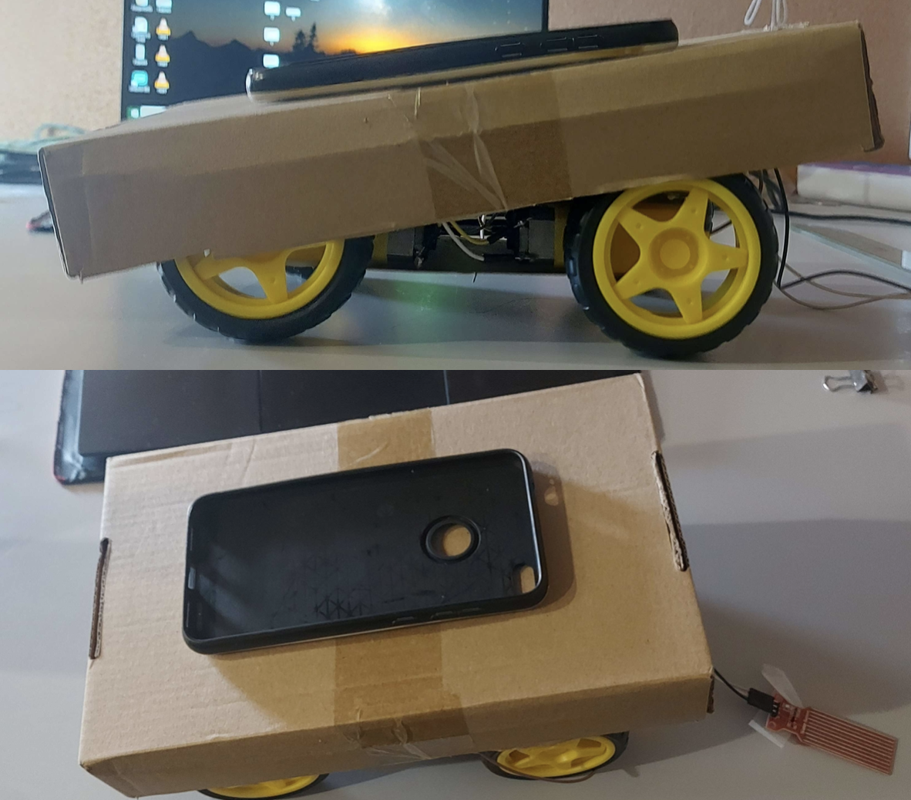

AquaEscape: Motorized Arduino Phone Holder That Drives Away From Water
For this project, we embarked on a creative journey aimed at innovating solutions to everyday challenges. Our task was to design and create physical prototypes that effectively addressed common problems while emphasizing functionality, aesthetics, and engagement. This involved the integration of at least one input and output device, strategically concealing wiring and boards to ensure a seamless design. Our ultimate goal was twofold: to deliver not only a fully functional prototype but also an immersive narrative storyboard that vividly depicted interactions and experiences. Through this process, we aimed to ensure the relevance and captivation of our design within our target audience, striving to bring both practicality and intrigue to our solution.
Initial Sketches
First, we collectively generated ten sketches from each team member, fostering a breadth of diverse and creative concepts to kickstart our design exploration.

Garbage Monitor (John)
An innovative Garbage Monitor design integrates an LED indicator that signals when the bin reaches its capacity with a weight sensor, coupled with an alarm reminder system. This smart solution ensures you're promptly alerted when it's time to empty the bin.

Concentration Bracelet (John)
A wearable designed to enhance focus and productivity. This innovative device discreetly buzzes or vibrates, gently reminding you when it's time to set aside distractions and return to work or studying.

Automatic Plant Watering System (John)
A device that automatically waters plants by detecting soil moisture levels using built-in sensors. It features an LED indicator that alerts when the water reservoir needs refilling, simplifying plant care for effortless maintenance.

Eyewear Glass Cleaner (Bassel)
A device designed to clean glasses automatically. It operates by spraying a cleaning solution onto the glasses when placed on the device and then gently wiping them clean similar to a car windshield wiper.

Device Legs (Bassel)
This device uses moisture sensors to detect contact with liquids and automatically lift the device effectively preventing potential damage by keeping it elevated and away from the liquid source.

Auto Air Freshener (Bassel)
Utilizing motors for mobility and equipped with air quality sensors, this device intelligently navigates spaces. It detects specific areas requiring a fresh scent and selectively sprays air freshener, ensuring an even distribution based on real-time air quality assessments.

Item Alert for Animals/Children (Mahian)
This device serves to notify owners when pets or children interact with restricted items. Leveraging motion detection it promptly signals owners of unauthorized access through an alarm. Additionally, it incorporates a buzzing mechanism to deter the children or pets from these items.

Ripeness Checker (Mahian)
This device is designed to determine the optimal time to enjoy fruits or vegetables. Using color or UV detectors it assesses the ripeness of produce indicating the perfect moment for consumption.

Bathroom Air Quality Checker (Mahian):
A device placed in the bathroom that uses an air quality sensor to check the condition of the bathroom. Using LED lights, it would notify when the room is ready to be entered again. Red signifying it is not safe and green when it is ready.

Chair Posture Reminder (Mahian)
A chair-mounted device ensures your posture is correct using weight sensors. When it detects improper posture, it triggers a gentle buzzing reminder until you adjust to the correct position, promoting better posture and comfort.
Refined Sketches
Next, we honed our focus on refining the initial sketches, delving deeper into ten evolved iterations per team member, aiming for enhanced innovation and practicality in our design concepts.

Concentration Phone (John)
An evolution from the concentration bracelet, this design features a phone placed on moving surfaces triggered by proximity sensors. When it's time to focus, the phone autonomously moves out of reach, using sensors to detect hands. It's a heightened approach to minimize distractions, making phone access challenging during concentration periods.

Smart Planter (John)
Expanding on the automatic plant watering system, this device introduces mobility by integrating wheels. In addition to automated watering, it employs UV light sensors to ensure the plant is consistently exposed to sunlight by redirecting its position as needed. This enhancement offers both watering convenience and optimal sunlight exposure, contributing to the plant's overall health and growth.

Remote Pet Monitoring (John)
A complete rebrand from the Item Alert for Animals/Children, this device is dedicated to comprehensive pet surveillance. It tracks your pet's movements throughout the house providing real-time feedback to the owner.

Device Wheels (Bassel)
Enhancing the concept of device protection from liquid damage this innovation builds upon the idea of device legs. Instead of using retracting legs this iteration employs wheels for mobility. Similar to its predecessor, it swiftly moves the device away from potential liquid sources ensuring swift and effective protection.

Bathroom Refresher (Bassel)
Merging the features of the Auto Air Freshener and Bathroom Air Quality Checker, this device offers an improved solution. It actively monitors bathroom air quality and when necessary employs an air freshener to swiftly enhance the environment.

Waterer Pipe and Drainage (Bassel)
Expanding on the Automatic Plant Watering System, this iteration introduces an innovative water supply and drainage system. It integrates the water supply directly from the drain to the water storage, enabling seamless auto-watering.

Spring Loaded Phone Case Legs (Bassel)
Evolving from the device legs concept, this iteration introduces spring-loaded mechanisms for enhanced phone protection. These specially designed legs automatically lift the phone above potential liquid hazards.

Telescoping Phone Cases Legs (Bassel)
Building on the concept of device legs, this iteration introduces telescoping legs designed to protect your phone. These extendable legs swiftly lift the phone above liquid sources.

Snoring Detector (Mahian)
Combining features from the Concentration Bracelet and noise detection technology, this wearable device acts as a snoring detector. When noise levels exceed pre-set thresholds associated with snoring, the device triggers a gentle buzz.

Device Fans (Mahian)
An evolved iteration of the device legs concept this design takes a different approach to protect the phone from liquid. Instead of moving the phone this innovation employs fans to blow liquid away from the device. By generating airflow directed at the liquid source it prevents potential contact ensuring the phone remains dry and safe without physically relocating it.
Design Process
The Problem
In our daily lives, one common and persistent issue we encounter involves safeguarding our smartphones from accidental spills or exposure to moisture. The vulnerability of these devices to liquids poses a constant threat, potentially causing irreversible damage, disrupted functionality, or even complete device failure. Whether it's a spilled drink, a sudden rain shower, or inadvertent contact with moisture-prone surfaces, these situations create anxiety and inconvenience, demanding a solution to protect our valuable gadgets from such hazards.
The Solution
Our prototype addresses this problem by introducing a smart detection and relocation system for smartphones. The design incorporates sensors capable of detecting liquid or moisture presence in the device's vicinity. Once detected, the system swiftly activates a mechanism, intelligently relocating the smartphone to a safe area, mitigating any potential damage. The relocation method could involve swiftly moving the phone away from the spillage or moisture-prone surface. This proactive approach aims to safeguard the device ensuring its longevity and uninterrupted functionality providing users with peace of mind in scenarios where accidents involving liquids are inevitable.